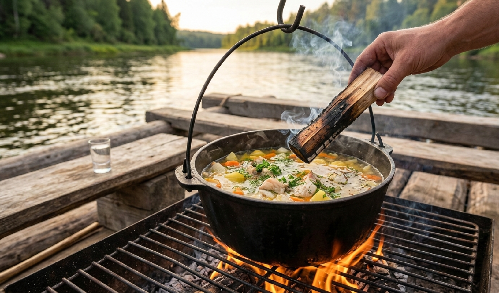

Блюдо 1 · суп
⏱ 40 минут
Сложность: легко
Донская уха из трёх рыб на костре
Классика сплава: судак для навара, окунь для тела, щепотка пшена и капля водки «для прозрачности». Рыбу можно поймать за час до готовки — вот карта клёвых мест.
Ингредиенты · на 4 чел
- · Судак — 1,2 кг
- · Окунь — 600 г
- · Картофель — 5 шт
- · Лук репчатый — 2 шт
- · Морковь — 1 шт
- · Пшено — 4 ст. л.
- · Лавровый лист — 2 шт
- · Водка (по желанию) — 50 мл
- · Укроп — 1 пучок
- · Соль, перец — по вкусу
Приготовление
- Налейте в казан воду и доведите до кипения на мангале.
- Заложите картофель, лук, морковь и пшено, варите 10 минут.
- Добавьте окуня, через 7 минут — судака, лавр и водку.
- Варите 8 минут без бурного кипения, снимая пену.
- Дайте постоять 10 минут под крышкой и посыпьте укропом.
Совет шефа: головы и хвосты судака не выбрасывайте — они дают тот самый клейкий навар. Уху солят в самом конце.
Список покупок
Соберём все ингредиенты блюда под выбранные порции — одной кнопкой в буфер обмена.
Или закажите продуктовый набор к посадке: администратор привезёт всё на борт.